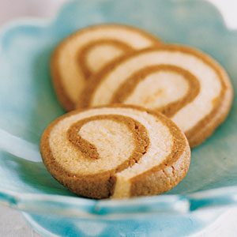

Attract a clientele that appreciates good books and discourse over coffee and snacks to a place where
there will be regular poetry readings, literary discussions, book club meetings, and reading of children's stories on weekends.
Coming Up:
Seuss Weekend - Saturday-Sunday, 26-27th Feb.
Children's Story Reading
Bring your children for entertaining and interactive
storytelling experiences of the Dr. Seuss classics.
Non-allergenic snacks and drinks included.
Dickens and D'oeuvres - Monday, 28th Feb.
Book Club

Come meet with local, fellow Dickens lovers to discuss
good books while having great Hors D'oeuvres and drinks!
Last meeting on Wednesday, Mar. 1st
Shakespearean Poetry Slam - Tuesday, 1st Mar.
Poetry Readings

Come meet with other Shakespearean prose-lovers to
discuss famous peices, or even read your own Bard-themed prose,
while having great snacks and drinks!
Dickens and D'oeuvres - Wednesday, 2nd Mar.
Book Club
Come meet with local, fellow Dickens lovers to discuss
good books while having great Hors D'oeuvres and drinks!
Last meeting!!
Snacks and Drinks
Coffee

We serve Starbucks© Certified coffee, such as lattes, espressos, frappuccino, and more
Tea
We serve Starbucks© Certified teas as well, iced and hot, such as black, green, chai, matcha, passionfruit, and more
Cakes

We proudly serve Crave© Cakes and Cupcakes!! Vanilla, Chocolate, Red Velvet, and more!
Cookies

Our employees proudly bake homemade cookies on a rotation, ensuring that all of our cookies are baked with love
Book Club Meetings - M, W, F
Every M,W,F from 6:00-7:30pm - Come meet with local, fellow book-lovers
to discuss good books while having great snacks and drinks!
Please use the Contact Us link at the bottom of the page and let us know if you're
interested, or just want to see the reading list !!
Poetry Readings - T, Th
Every T,Th from 6:00-7:30pm - Come meet with other prose-lovers from your area
to discuss famous or popular poetry, or even read your own, while having great snacks and drinks!
Please use the Contact Us link at the bottom of the page and let us know if you're
interested, or just want to see the upcoming readings!
Children's Story Reading - Sat, Sun
Every Weekend from 12:00-2:00pm - Bring your children
for entertaining and interactive storytelling experiences of fun and
educational stories!! Non-allergenic snacks and drinks included. Please use the
Contact Us link at the bottom of the page and let us know if you're
interested!